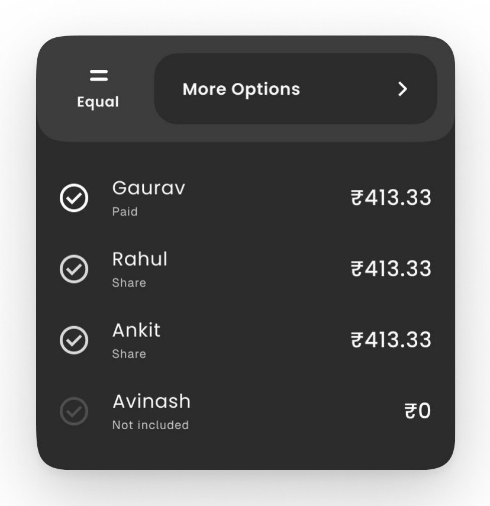
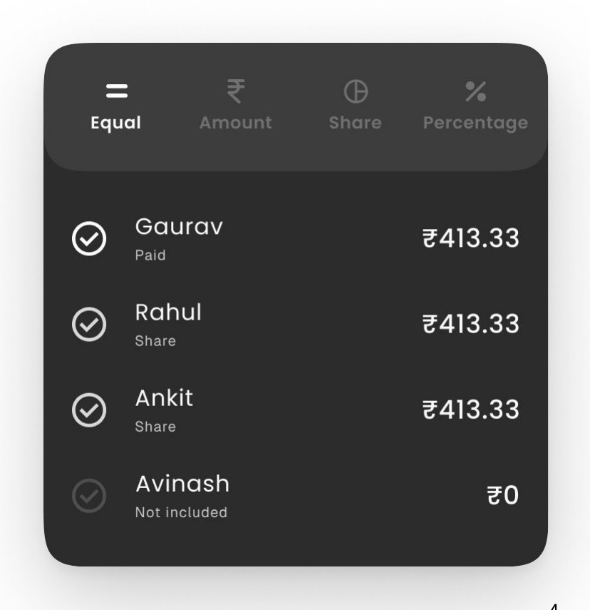

01
Equal by defaultevery option in sight
My first version hid amount, share and percentage behind a More Options button. It looked tidy. It also meant people who needed an uneven split had to know it was there. Now Equal is selected by default, and the other three sit right beside it. One tap to switch.
- Considered
- A More Options button for advanced splits
- Dropped
- Hiding the methods
- Why
- Clean isn't the same as easy. A hidden option is a missing option.

